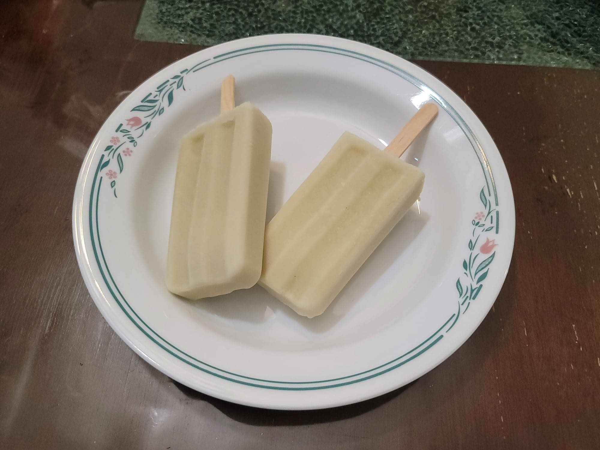

Paletas de Batata y Coco

Ingredients:
- 1 lb Batata (Japanese sweet potato), peeled and cubed
- Water, to cover
- 1/4 tsp Salt, or as needed
- 3/4 cup Sugar
- 1 cup Coconut milk
- 2 cups Milk
- Optional: 2 tsp Vanilla extract
Instructions:
- Place the batata in a saucepan and add the salt and enough water to cover. Bring to a boil and cook until easily pierced with a fork. Then drain from the water and let cool to room temperature.
- Combine the cooked batata, sugar, coconut milk, milk, and vanilla extract into a blender. Blend until completely smooth. Transfer into popsicle molds and let freeze in a freezer overnight. Serve frozen.